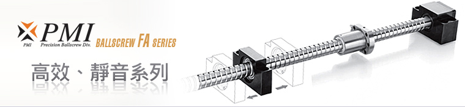

滾珠螺桿系列
轉造級滾珠螺桿
滾珠螺桿庫存區
線性滑軌系列
KM
線性模組系列
滾珠螺桿支撐座
高荷重螺桿支撐座
馬達傳動座
聯軸器
精密鎖定螺帽
利茗減速機
直線軸承
LMC
單軸心式滑軌
LGD
雙軸心式滑軌
FA 高效靜音滾珠螺桿系列
Ballscrew FA Series
下載規格表

PMI
新一代 FA 系列滾珠螺桿實現了高速化、靜音化、標準化的特點。 採用全新的循環方式，能迅速的對應巿場各種應用及需求，
此 FA 系列在各個應用領域中均能發揮高速、靜音、效率 的功用。
Download
下載 FA 高效靜音系列規格表
產品特性
短交期的對應、適合的用途精度和價格、採用高速及靜音循環方式、行程的活用性、節省空間。
交期短
短交期的對應
將滾珠螺桿專用的精密外徑作為支撐端城達成在庫標準。
活用性
行程的活用性
將支撐軸端作為行程對應切斷，利用螺桿外徑作為支撐，可容易設定使用之行程。
精度高
適合的用途精度和價格
精度等級 C5 和 5µm 以下間隙作設定，大大的降低了使用成本和交期。
節省空間
節省空間
螺帽長度變短，外徑尺寸可減少 20%~25% 和採用了專用的支撐元件，可節省設計空間的裝置。
高速/靜音
採用高速、靜音循環方式
適用在 PMI 獨自的高速靜音技術，可實現最高 5000rpm 的迴轉速，噪音及震動和過去的迴流管循環方式比較，噪音減少約 (6db)
產品專利
台灣、日本、德國、中國大陸
應用範圍
半導體生產設備、測定機器、檢測設備、醫療設備、自動化設備、輕型加工機、
點膠機及專用機等，廣泛產業領域的精密運動及定位用途最適用。
返回首頁
|
產品介紹
|
滾珠螺桿
|
線性滑軌
|
線性模組
|
聯軸器
|
檔案下載
|
聯絡我們
Copyright
© 2018
HONG YI PRECISION CO.,LTD.
鴻翊精密股份有限公司
TEL: 04-2426 5828 FAX: 04-2425 9082
台中市北屯區環中路一段1702-3號